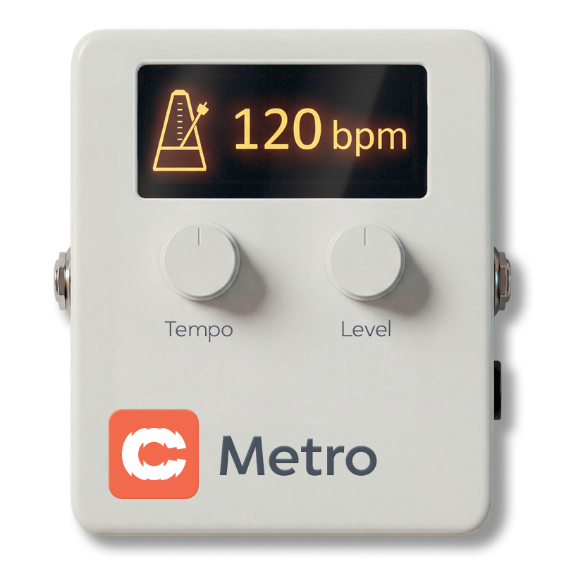
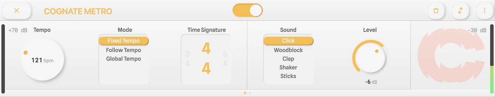
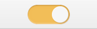
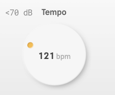
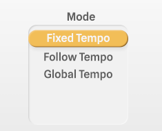

Utilities
| Category | Utilities |
| Channels | Mono in / mono out |
| Version | 1.01 (06/04/2026) |
Cognate Metro is a free metronome block for the Darkglass Anagram, designed to help you practice and improve your internal sense of time. It covers all the basics — bass-friendly click sounds, common and irregular time signatures, and tempo control by direct entry, host sync, tap, or by simply playing a few notes on your bass. Beyond the basics, it includes two features aimed squarely at building rhythmic skill: Gap mode, which progressively strips beats and bars out of the click so you have to hold the pulse yourself, and Accuracy, a readout that tells you how far ahead or behind the beat you actually are.

Page 1 of 2

Page 2 of 2

Turns off the metronome click and passes your bass's signal directly through to the next block in the signal chain. Use it to silence the click between songs without removing Metro from your preset, or to A/B the click against silence while you check your timing on your own.

0 = "Listening"Sets the click tempo in beats per minute when Mode is set to Fixed Tempo. The full range covers everything from very slow practice tempos up to drum-and-bass and gabber territory.
Setting Tempo to 0 puts the plugin into Listening mode: no click is produced, but the tempo display still tracks whatever you play. Useful for checking the tempo of an idea without committing to an audible click.

Selects how the metronome decides on its tempo.

Sets the metre of the click. The first beat of each bar is accented so you can hear the bar boundary.

Selects the click sample. Each option is voiced to sit clearly above bass without masking the low end you're trying to play.

-40 = "-Inf"Output level of the click. Set it relative to your bass signal — high enough to play to comfortably, low enough not to fatigue you over a long session. Turning fully down (-Inf) silences the click without disabling the plugin, which is useful for the Gap mode practice trick of muting the metronome at will.

Removes part of the click on a repeating pattern, forcing you to hold the pulse internally during the gaps. This is the heart of Cognate Metro's practice philosophy: a metronome that's always playing teaches you to follow it, but a metronome that comes and goes teaches you to be it.
After any gap, the click returns and you can immediately hear whether you drifted.

A readout, not a control. Cognate Metro listens to your bass while you play along with the click and reports your timing offset relative to the beat in milliseconds. Negative values mean you're playing ahead of the beat (rushing); positive values mean you're behind (dragging). The display averages over recent notes so it doesn't jitter on every hit.
This is the kind of feedback that's almost impossible to get from listening alone — most players have a consistent bias they can't hear. Watch the readout while you play and you'll find out which side of the beat you live on.